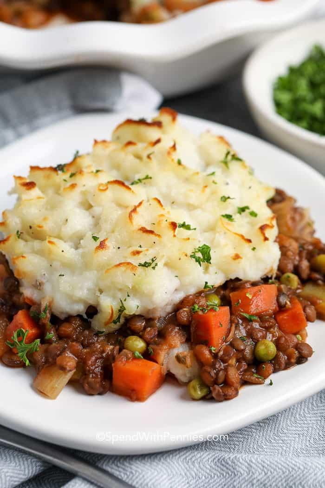

Sheperd's Pie
- A classic from Scotland -

Ingredients
- Flour
- Carrots
- Beef (or lamb)
- Potatoes
- Turnips or cabbage depending on preference
- Peas
Steps
- Cut up and cook vegetables.
- Fry the meat's surface.
- Bake together in the oven for 45 minutes at 180° Celsius.